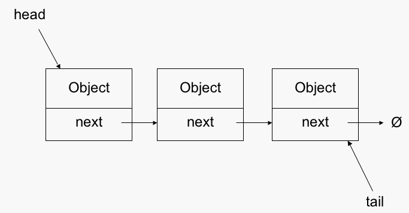

\( \newcommand{\ord}[1]{\mathcal{O}\left(#1\right)} \newcommand{\abs}[1]{\lvert #1 \rvert} \newcommand{\floor}[1]{\lfloor #1 \rfloor} \newcommand{\ceil}[1]{\lceil #1 \rceil} \newcommand{\opord}{\operatorname{\mathcal{O}}} \newcommand{\argmax}{\operatorname{arg\,max}} \newcommand{\str}[1]{\texttt{"#1"}} \)
基礎資料結構
為什麼要學資料結構
資料結構
:如何在電腦中儲存資料
對於不同用途選擇不同資料結構
時間複雜度
空間複雜度
codeing複雜度
資料結構是一種工具
(多種)演算法+(多種)資料結構
常見的資料結構操作
push :放進一個元素
pop :拿出一個元素
query :各種查詢
stack
堆疊
性質
first in last out(FILO)
疊盤子
基本操作
push :把一個元素放進頂端
pop :從頂端拿出一個元素
實作
使用陣列或linked list
陣列實作
用一個變數top紀錄頂端的位置
top = -1, stack是空的
push: top + 1
pop: top - 1
stack示範影片
stack用陣列模擬
queue
佇列
性質
first in first out(FIFO)
排隊
基本操作
push :把一個元素放進尾端
pop :從頭端拿出一個元素
實作
使用陣列或linked list
陣列實作
用一個變數front紀錄頭端元素「前一格」的位置
用一個變數back紀錄尾端元素的位置
front == back : queue是空的
初始化front = back = -1
push : back + 1
pop : front + 1
queue示範影片
queue用陣列模擬
queue的問題
陣列產生的問題
一個元素一旦被pop，該位置無法再放置新的元素
解決方法
當back到陣列最後的時候，把所有元素平移到陣列的前方
使用環狀queue
使用linked list
注意
不管怎樣queue裡的元素都不能超過陣列大小
linked list
鏈結串列
基本單元(node):data + pointer
將很多node連接起來
head指標指向第一個node，最後一個指標指向null
(以單向連結串列為例子)

性質
每個元素只記錄他的下一個元素，外部只記錄起點
動態宣告記憶體
分類:單向、雙向、環狀
不能隨機存取
基本操作
insert
在兩個元素中插入一個元素
在頭尾插入一個元素
erase
刪除一個元素
insert
erase
實作
實作方式有兩種，一種是用陣列，另一種是指標
但其實兩者都是在做指標的事情
指標實作 vs 陣列實作
指標可以減少記憶體的用量，code也比較好看
但是陣列實作在「查詢某個特定編號的節點」佔有優勢，這次作業會出這種題目，而且資料結構不一定要按造給定的規則寫，只要能做到他要求的操作就算完成了
雙向、環狀linked list
聽名子就知道什麼意思了，應該可以不用講了吧?
雙向環狀
stack常見題型 - 括號匹配
題目
括號匹配
對於一個合法字串，我們有以下的定義:
空字串是合法字串
若$S_1, \;S_2$是合法字串，則$S_1S_2$也是合法字串
若$S$是合法字串，則$(S), \; [S], \; \{S\}$是合法字串
給定一個字串$SM$，請問$SM$是否是一個合法字串?
觀察
括號會包住合法字串，因此我們如果能把包住的字串先判斷完，再判斷括號有沒有對齊即可
用stack試試看
{[()]}
判斷
由左到右一個一個掃描字串
遇到左括號，丟進stack
遇到右括號，如果stack頂端的左括號和當前右括號匹配，則pop頂端元素，否則為不合法情況
如果整個字串都掃描過一遍，沒有出現不合法的情況，且最後stack是空的，則此字串為合法字串
這週關於stack的題目大多都是這種類型喔
一定要理解
本週作業
作業
基礎資料結構
stack:
第一題
、
第二題
queue: 下週的單元會大量用到queue，所以這週沒練習題
linked list:
第三題